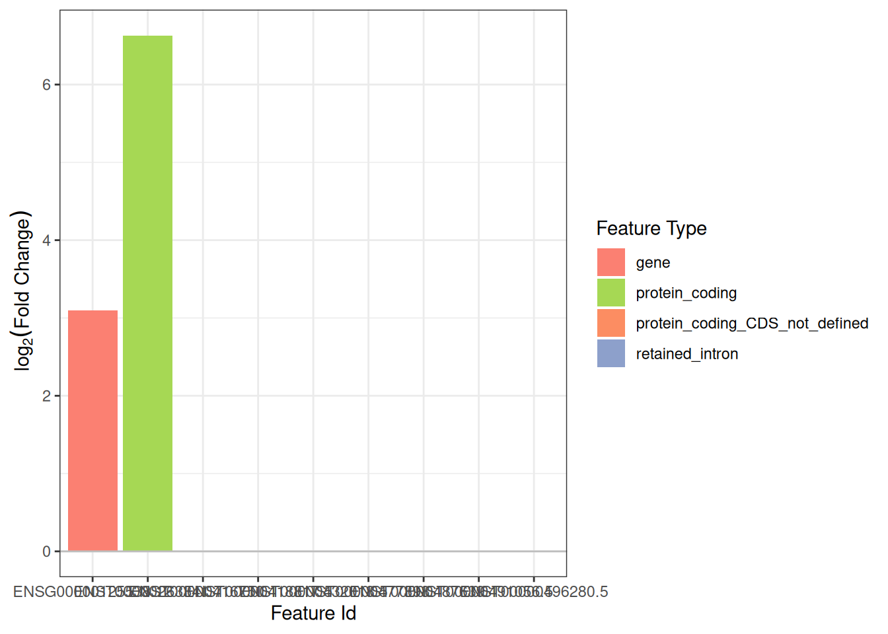
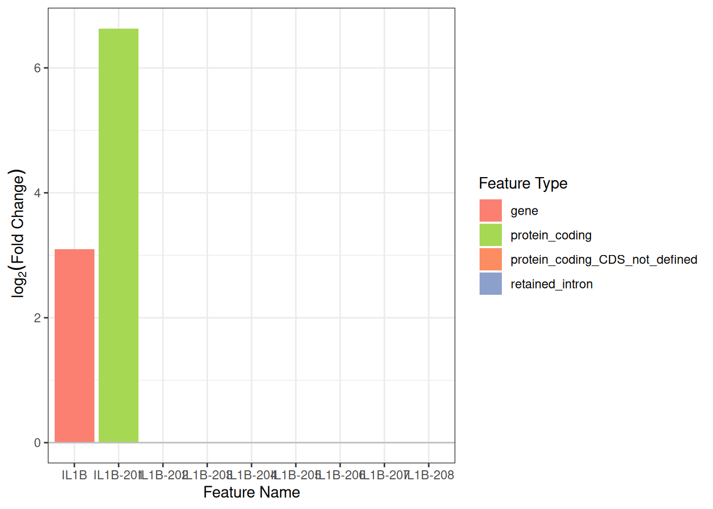
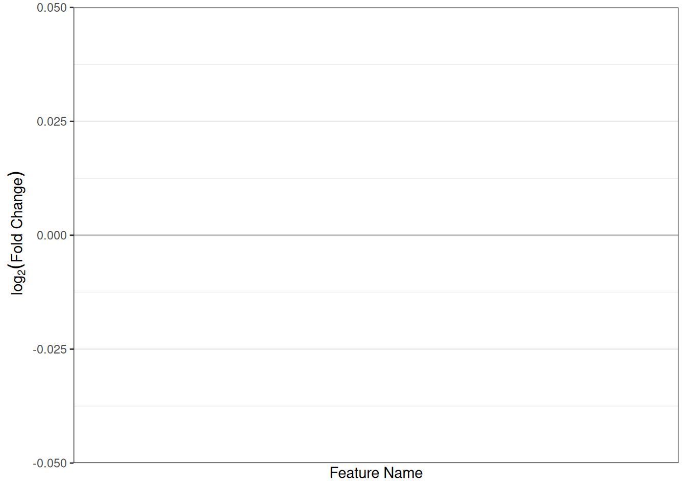

library(isoformic)
tx_fasta_path <- download_reference(version = "49", file_type = "fasta")
genome_fasta_path <- download_reference(version = "49", file_type = "genome_fasta")
gff_path <- download_reference(version = "49", file_type = "gff")
base_dir <- fs::path("data-raw", "vignette_data")
index_path <- fs::path(base_dir, "salmon_index_k15")
salmon_index(
fasta_path = tx_fasta_path,
index_path = index_path,
kmer_len = 15,
num_threads = 8,
is_gencode = TRUE,
decoy_fasta = genome_fasta_path
)
fastq_files <- fs::dir_ls("data-raw/mini_data/sub_fastq/")
sample_names <- fs::path_file(fastq_files) |>
stringr::str_remove("_sub_[1-2].fastq.gz$") |>
unique() |>
sort()
for (i in seq_along(sample_names)) {
sample_name <- sample_names[i]
salmon_output <- fs::path(base_dir, "salmon_quants", paste0(sample_name, "_quant"))
fastq_r1 <- fs::dir_ls("data-raw/mini_data/sub_fastq/", regexp = paste0(sample_name, "_sub_1.fastq.gz$"))
fastq_r2 <- fs::dir_ls("data-raw/mini_data/sub_fastq/", regexp = paste0(sample_name, "_sub_2.fastq.gz$"))
# fs::file_exists(fastq_r1)
# fs::file_exists(fastq_r2)
salmon_quant(
index_path = index_path,
input_r1 = fastq_r1,
input_r2 = fastq_r2,
output_dir = salmon_output,
num_threads = 8,
num_gibbs = 20,
min_score_fraction = "0.65"
)
}Preprocessing Short-Read Sequencing Files for Isoformic
October 2, 2025
Source:vignettes/isoformic-preprocess.qmd
Salmon: command command line interface anatomy
From the Terminal - Salmon Command Line Interface
Below is a single-sample invocation (to be run in a Bash shell) showing the typical arguments we used when making the mini dataset used in this vignette.
Replace the paths with yours if you want to reproduce.
More thorough information can be found on: https://combine-lab.github.io/salmon/.
# Not needed as of Salmon 1.10.3:
# --validateMappings \ # selective-alignment (more specific, recommended)
salmon quant \
--libType A \ # A -> autodetect library type from the reads
--index /path/to/index \ # Transcriptome index (here: index built from the FASTA annotation file)
--mates1 /path/SRR..._1.fastq \ # R1 FASTQ
--mates2 /path/SRR..._2.fastq \ # R2 FASTQ
--output /path/SRR..._quant \ # Output folder (contains quant.sf, aux_info/)
--threads 8 \ # Number of parallel threads used
--disableChainingHeuristic \ # improve mapping sensitivity, but slower
--allowDovetail \
--softclipOverhangs \ # softclip reads that overhang transcripts start and end
--dumpEq \
--dumpEqWeights \ # dump equivalent class information, needed by Terminus
--posBias --seqBias --gcBias \ # bias corrections (positional, sequence, GC)
--numGibbsSamples 100 # draw inferential replicates; required for fishpond/SwishFrom R - condathis wrapper for Salmon
Caveats: currently Salmon is only available for macOS and Linux on the Bioconda channel.
Therefore, this example will not work natively on Windows. But you can use WSL2 (Windows Subsystem for Linux) on Windows 10/11 to run it.
Load Data and Create IsoformicExperiment Object
suppressPackageStartupMessages({
library(tximeta)
library(SummarizedExperiment)
library(fishpond)
library(DESeq2)
})
library(isoformic)
# Where extdata lives
extdata_dir <- system.file("extdata", package = "isoformic")
quants_dir <- file.path(extdata_dir, "mini_quants")
gff_path <- download_reference(version = "49", file_type = "gff")
#> ✔ '/home/runner/.cache/R/isoformic/gencode.v49.chr_patch_hapl_scaff.annotation.gff3.gz'
#> successfully downloaded.Load Salmon Quantification with tximport
Point to Salmon’s quant.sf output files.
# discover sample folders like SRR11498039_quant, etc.
sample_dirs <- list.dirs(quants_dir, full.names = FALSE, recursive = FALSE)
# keep only *_quant and strip the suffix for sample names
sample_names <- sub("_quant$", "", sample_dirs)
stopifnot(length(sample_names) == 6)
# define groups: "control" = first 3, "treatment" = last 3 (sorted by sample ID)
sample_names <- sort(sample_names)
condition <- c(rep("control", 3), rep("treatment", 3))
quant_files <- file.path(quants_dir, paste0(sample_names, "_quant"), "quant.sf")
names(quant_files) <- sample_names
stopifnot(all(file.exists(quant_files)))
col_data <- tibble::tibble(
files = quant_files,
names = sample_names,
condition = factor(condition, levels = c("control", "treatment"))
)
col_data
#> # A tibble: 6 × 3
#> files names condition
#> <chr> <chr> <fct>
#> 1 /home/runner/work/_temp/Library/isoformic/extdata/mini_quants… SRR1… control
#> 2 /home/runner/work/_temp/Library/isoformic/extdata/mini_quants… SRR1… control
#> 3 /home/runner/work/_temp/Library/isoformic/extdata/mini_quants… SRR1… control
#> 4 /home/runner/work/_temp/Library/isoformic/extdata/mini_quants… SRR1… treatment
#> 5 /home/runner/work/_temp/Library/isoformic/extdata/mini_quants… SRR1… treatment
#> 6 /home/runner/work/_temp/Library/isoformic/extdata/mini_quants… SRR1… treatmentImport transcriptomics data with tximport.
se_tx <- tximeta::tximeta(
coldata = col_data,
type = "salmon",
txOut = TRUE,
skipMeta = TRUE,
useHub = FALSE,
ignoreAfterBar = TRUE,
skipSeqinfo = TRUE
)
#> importing salmon quantification files
#> reading in files with read_tsv
#> 1 2 3 4 5 6
mini_inf_reps <- readRDS(system.file("extdata/mini_inf_reps.rds", package = "isoformic"))
assays(se_tx) <- c(assays(se_tx), mini_inf_reps)Convert to IsoformicExperiment object.
iso <- as_isoformic(se_tx, gff_path)
iso
#> <IsoformicExperiment>
#> Experiment Name: 778d392d53b1394c97b69c3aec6ba177
#> Data Path: /home/runner/.cache/R/isoformic/778d392d53b1394c97b69c3aec6ba177
#> Assays: counts, abundance, length, infRep1, infRep2, infRep3, infRep4, infRep5, infRep6, infRep7, infRep8, infRep9, infRep10, infRep11, infRep12, infRep13, infRep14, infRep15, infRep16, infRep17, infRep18, infRep19, infRep20
#> Samples: 6
#> Transcripts in Assay: 111
#> Annotation Name: gencode_v49_chr_patch_hapl_scaff_annotation_gff3
#> Annotation Path: /home/runner/.cache/R/isoformic/gencode_v49_chr_patch_hapl_scaff_annotation_gff3
#> Transcripts in Annotation: 533740
#> Genes in Annotation: 86369
#> Exons in Annotation: 3823521
#> Annotation Metadata: 6 slots
tx_to_gene_df <- tx_to_gene(iso)
head(tx_to_gene_df)
#> # A tibble: 6 × 2
#> transcript_id gene_id
#> <chr> <chr>
#> 1 ENST00000832824.1 ENSG00000290825.2
#> 2 ENST00000832825.1 ENSG00000290825.2
#> 3 ENST00000832826.1 ENSG00000290825.2
#> 4 ENST00000832827.1 ENSG00000290825.2
#> 5 ENST00000832828.1 ENSG00000290825.2
#> 6 ENST00000832829.1 ENSG00000290825.2
# rowData(se_tx) <- row_data(iso)
iso
#> <IsoformicExperiment>
#> Experiment Name: 778d392d53b1394c97b69c3aec6ba177
#> Data Path: /home/runner/.cache/R/isoformic/778d392d53b1394c97b69c3aec6ba177
#> Assays: counts, abundance, length, infRep1, infRep2, infRep3, infRep4, infRep5, infRep6, infRep7, infRep8, infRep9, infRep10, infRep11, infRep12, infRep13, infRep14, infRep15, infRep16, infRep17, infRep18, infRep19, infRep20
#> Samples: 6
#> Transcripts in Assay: 111
#> Annotation Name: gencode_v49_chr_patch_hapl_scaff_annotation_gff3
#> Annotation Path: /home/runner/.cache/R/isoformic/gencode_v49_chr_patch_hapl_scaff_annotation_gff3
#> Transcripts in Annotation: 533740
#> Genes in Annotation: 86369
#> Exons in Annotation: 3823521
#> Annotation Metadata: 6 slotsPerform transcript-level Differential Expression Analysis with fishpond.
y <- se_tx
y <- fishpond::scaleInfReps(y)
y <- fishpond::labelKeep(y, minCount = 10, minN = 3)
# y <- y[mcols(y)$keep, ]
colData(y)$condition <- factor(col_data$condition, levels = c("control", "treatment"))
# y$condition <- factor(y$condition, levels = c("control", "treatment"))
colData(y)
#> DataFrame with 6 rows and 2 columns
#> names condition
#> <character> <factor>
#> SRR11498039 SRR11498039 control
#> SRR11498040 SRR11498040 control
#> SRR11498041 SRR11498041 control
#> SRR11498079 SRR11498079 treatment
#> SRR11498080 SRR11498080 treatment
#> SRR11498081 SRR11498081 treatment
# run Swish
y <- fishpond::swish(y, x = "condition")
dea_tx_res <- mcols(y) |>
base::as.data.frame() |>
tibble::rownames_to_column("transcript_id") |>
tibble::as_tibble()
iso@dea$det <- dea_tx_res
de_tx(iso)
#> # A tibble: 111 × 9
#> transcript_id log10mean keep stat log2FC pvalue locfdr qvalue det_sig
#> <chr> <dbl> <lgl> <dbl> <dbl> <dbl> <dbl> <dbl> <chr>
#> 1 ENST00000263341.7 3.59 TRUE 3.25 6.63 0.0804 0.574 0.258 no
#> 2 ENST00000651122.1 2.72 TRUE 3.5 4.91 0.0627 0.498 0.258 no
#> 3 ENST00000306602.3 2.44 TRUE -3.3 -3.75 0.0754 0.553 0.258 no
#> 4 ENST00000392322.7 2.61 TRUE 2.45 2.62 0.179 0.912 0.466 no
#> 5 ENST00000698141.1 2.45 TRUE 2 2.24 0.287 1 0.575 no
#> 6 ENST00000697958.1 2.52 TRUE -3.65 -2.01 0.0488 0.434 0.258 no
#> 7 ENST00000673858.1 2.18 TRUE 2.1 1.98 0.266 1 0.575 no
#> 8 ENST00000367468.10 2.92 TRUE 1.85 1.82 0.342 1 0.634 no
#> 9 ENST00000557389.1 2.75 TRUE -3.85 -1.67 0.0438 0.410 0.258 no
#> 10 ENST00000330871.3 3.57 TRUE 1.5 1.63 0.423 1 0.648 no
#> # ℹ 101 more rowsSummarize Transcript SummarizedExperiment to Gene level.
Perform Gene level Differential Expression with DESeq2.
colData(se_gene)$condition <- factor(colData(se_gene)$condition, levels = c("control", "treatment"))
assays(se_gene)$counts <- round(assays(se_gene)$counts)
dds <- DESeq2::DESeqDataSet(se_gene, design = ~condition)
#> using counts and average transcript lengths from tximeta
dds <- dds[rowSums(DESeq2::counts(dds) >= 10) >= 3, ]
dds <- DESeq2::DESeq(dds)
#> estimating size factors
#> using 'avgTxLength' from assays(dds), correcting for library size
#> estimating dispersions
#> gene-wise dispersion estimates
#> mean-dispersion relationship
#> final dispersion estimates
#> fitting model and testing
res <- DESeq2::results(dds, contrast = c("condition", "treatment", "control"))
# shrink for stability on small example
if (rlang::is_installed("apeglm")) {
message("apeglm is installed")
shrink_type <- "apeglm"
} else {
message("apeglm is NOT installed")
shrink_type <- "normal"
}
#> apeglm is installed
res_shr <- DESeq2::lfcShrink(
dds,
coef = "condition_treatment_vs_control",
res = res,
type = shrink_type
)
#> using 'apeglm' for LFC shrinkage. If used in published research, please cite:
#> Zhu, A., Ibrahim, J.G., Love, M.I. (2018) Heavy-tailed prior distributions for
#> sequence count data: removing the noise and preserving large differences.
#> Bioinformatics. https://doi.org/10.1093/bioinformatics/bty895
# res
# res_shr
dea_gene_res <- base::as.data.frame(res_shr) |>
tibble::rownames_to_column("gene_id") |>
tibble::as_tibble() |>
dplyr::rename(
log2FC = log2FoldChange,
pvalue = pvalue,
qvalue = padj
)
iso@dea$deg <- dea_gene_res
de_gene(iso)
#> # A tibble: 12 × 7
#> gene_id baseMean log2FC lfcSE pvalue qvalue deg_sig
#> <chr> <dbl> <dbl> <dbl> <dbl> <dbl> <chr>
#> 1 ENSG00000125538.12 107. 3.09 1.47 0.000633 0.00570 yes
#> 2 ENSG00000115415.22 464. 0.00000215 0.00144 0.432 0.668 no
#> 3 ENSG00000271503.7 21812. -0.00000141 0.00144 0.330 0.668 no
#> 4 ENSG00000100906.13 1298. -0.00000139 0.00144 0.393 0.668 no
#> 5 ENSG00000169429.13 25857. -0.000000744 0.00144 NA NA no
#> 6 ENSG00000184557.5 254. 0.000000697 0.00144 0.680 0.765 no
#> 7 ENSG00000169245.6 23.3 -0.000000495 0.00144 0.138 0.620 no
#> 8 ENSG00000073756.13 63.7 0.000000483 0.00144 0.561 0.722 no
#> 9 ENSG00000090339.10 188. -0.000000378 0.00144 0.822 0.822 no
#> 10 ENSG00000136244.13 6.34 -0.000000337 0.00144 0.445 0.668 no
#> 11 ENSG00000108691.10 46.5 0.000000294 0.00144 NA NA no
#> 12 ENSG00000274233.4 908. 0.000000130 0.00144 NA NA noPlot examples.
top_de_gene <- de_gene(iso) |>
dplyr::arrange(qvalue) |>
dplyr::slice_head(n = 1) |>
dplyr::pull(gene_id)
plot_log2fc(
iso,
feature = top_de_gene,
feature_column = "gene_id"
)
#> Warning: Removed 7 rows containing missing values or values outside the scale range
#> (`geom_bar()`).
By gene name
gene_to_plot <- row_data(iso) |>
dplyr::filter(gene_id %in% top_de_gene) |>
dplyr::slice_head(n = 1) |>
dplyr::pull(gene_name)
plot_log2fc(
iso,
feature = gene_to_plot,
feature_column = "gene_name"
)
#> Warning: Removed 7 rows containing missing values or values outside the scale range
#> (`geom_bar()`).
Top DE transcripts
row_data(iso) |>
dplyr::filter(gene_name %in% "MTG2")
#> # A tibble: 0 × 6
#> # ℹ 6 variables: transcript_id <chr>, transcript_name <chr>,
#> # transcript_type <chr>, gene_id <chr>, gene_name <chr>, gene_type <chr>
plot_log2fc(
iso,
feature = "MTG2",
feature_column = "gene_name"
)
#> Warning: No shared levels found between `names(values)` of the manual scale and the
#> data's fill values.